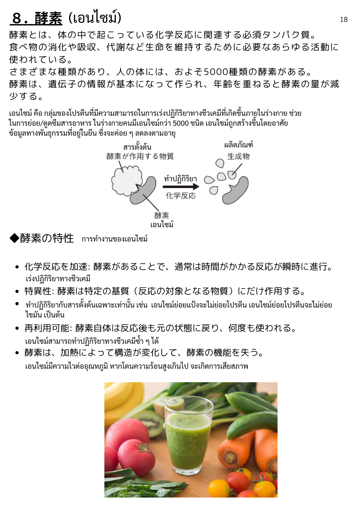
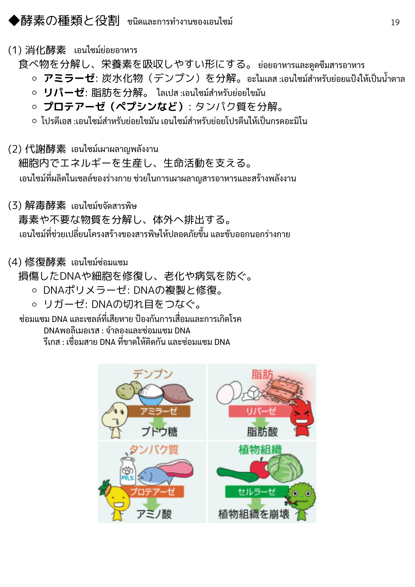
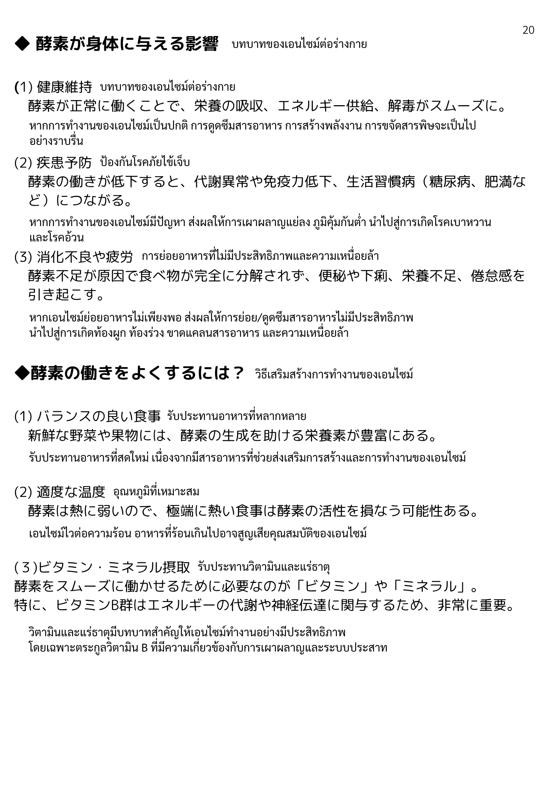

| 漢字 | ひらがな | ความหมาย (ไทย) |
|---|---|---|
| 酵素 | こうそ | เอนไซม์ |
| 体 | からだ | ร่างกาย |
| 化学反応 | かがくはんのう | ปฏิกิริยาเคมี |
| 関連 | かんれん | เกี่ยวข้อง |
| 必須 | ひっす | จำเป็น / ขาดไม่ได้ |
| タンパク質 | たんぱくしつ | โปรตีน |
| 消化 | しょうか | การย่อยอาหาร |
| 吸収 | きゅうしゅう | การดูดซึม |
| 代謝 | たいしゃ | การเผาผลาญ / เมตาบอลิซึม |
| 生命 | せいめい | ชีวิต |
| 維持 | いじ | การคงไว้ / รักษา |
| 活動 | かつどう | การทำงาน / กิจกรรม |
| 種類 | しゅるい | ชนิด / ประเภท |
| 人 | ひと | คน |
| 遺伝子 | いでんし | ยีน / พันธุกรรม |
| 情報 | じょうほう | ข้อมูล |
| 基本 | きほん | พื้นฐาน |
| 年齢 | ねんれい | อายุ |
| 重ねる | かさねる | เพิ่มขึ้น / สะสม |
| 量 | りょう | ปริมาณ |
| 減る | へる | ลดลง |
| 漢字 | ひらがな | ความหมาย (ไทย) |
|---|---|---|
| 特性 | とくせい | คุณสมบัติเฉพาะ |
| 加速 | かそく | การเร่ง / เพิ่มความเร็ว |
| 通常 | つうじょう | ปกติ / โดยทั่วไป |
| 時間 | じかん | เวลา |
| 瞬時 | しゅんじ | ทันที / ชั่วพริบตา |
| 進行 | しんこう | ดำเนินไป / คืบหน้า |
| 特異性 | とくいせい | ความจำเพาะ |
| 特定 | とくてい | เฉพาะ / ระบุ |
| 基質 | きしつ | สารตั้งต้น (ซับสเตรท) |
| 反応 | はんのう | ปฏิกิริยา |
| 対象 | たいしょう | วัตถุประสงค์ / เป้าหมาย |
| 物質 | ぶっしつ | สาร / วัตถุ |
| 作用 | さよう | การออกฤทธิ์ / ผล |
| 再利用可能 | さいりようかのう | ใช้ซ้ำได้ |
| 自体 | じたい | ตัวมันเอง |
| 状態 | じょうたい | สภาพ / สถานะ |
| 戻る | もどる | กลับคืน |
| 加熱 | かねつ | การให้ความร้อน |
| 構造 | こうぞう | โครงสร้าง |
| 変化 | へんか | การเปลี่ยนแปลง |
| 機能 | きのう | การทำงาน / ฟังก์ชัน |
| 失う | うしなう | สูญเสีย |
| 漢字 | ひらがな | ความหมาย (ไทย) |
|---|---|---|
| 役割 | やくわり | บทบาท / หน้าที่ |
| 消化酵素 | しょうかこうそ | เอนไซม์ย่อยอาหาร |
| 代謝酵素 | たいしゃこうそ | เอนไซม์เมตาบอลิซึม |
| 解毒酵素 | げどくこうそ | เอนไซม์ขจัดสารพิษ |
| 修復酵素 | しゅうふくこうそ | เอนไซม์ซ่อมแซม |
| 分解 | ぶんかい | การสลาย / ย่อย |
| 栄養素 | えいようそ | สารอาหาร |
| 吸収しやすい | きゅうしゅうしやすい | ดูดซึมง่าย |
| 形 | かたち | รูปร่าง / รูปแบบ |
| 炭水化物 | たんすいかぶつ | คาร์โบไฮเดรต |
| 脂肪 | しぼう | ไขมัน |
| 細胞内 | さいぼうない | ภายในเซลล์ |
| エネルギー | えねるぎー | พลังงาน |
| 生成 | せいせい | การสร้าง / ผลิต |
| 支える | ささえる | สนับสนุน / ค้ำจุน |
| 毒素 | どくそ | สารพิษ |
| 有害 | ゆうがい | เป็นอันตราย |
| 体外 | たいがい | ภายนอกร่างกาย |
| 排出 | はいしゅつ | การขับออก |
| 損傷 | そんしょう | ความเสียหาย |
| DNA | でぃーえぬえー | ดีเอ็นเอ |
| 細胞 | さいぼう | เซลล์ |
| 修復 | しゅうふく | การซ่อมแซม |
| 老化 | ろうか | ความชรา |
| 病気 | びょうき | โรค |
| 防ぐ | ふせぐ | ป้องกัน |
| 漢字 | ひらがな | ความหมาย (ไทย) |
|---|---|---|
| アミラーゼ | あみらーぜ | อะไมเลส (ย่อยแป้ง) |
| リパーゼ | りぱーぜ | ไลเปส (ย่อยไขมัน) |
| プロテアーゼ | ぷろてあーぜ | โปรตีเอส (ย่อยโปรตีน) |
| ペプシン | ぺぷしん | เปปซิน |
| DNAポリメラーゼ | でぃーえぬえーぽりめらーぜ | DNA โพลิเมอเรส (คัดลอก DNA) |
| リガーゼ | りがーぜ | ไลเกส (เชื่อม DNA) |
| 複製 | ふくせい | การคัดลอก / จำลอง |
| 切れ目 | きれめ | รอยตัด |
| 繋ぐ | つなぐ | เชื่อมต่อ |
| ブドウ糖 | ぶどうとう | กลูโคส |
| アミノ酸 | あみのさん | กรดอะมิโน |
| 脂肪酸 | しぼうさん | กรดไขมัน |
| 植物組織 | しょくぶつそしき | เนื้อเยื่อพืช |
| セルラーゼ | せるらーぜ | เซลลูเลส |
| 崩壊 | ほうかい | การสลายตัว / พังทลาย |
| 漢字 | ひらがな | ความหมาย (ไทย) |
|---|---|---|
| 身体 | しんたい | ร่างกาย |
| 影響 | えいきょう | ผลกระทบ / อิทธิพล |
| 健康維持 | けんこういじ | การรักษาสุขภาพ |
| 正常 | せいじょう | ปกติ |
| 供給 | きょうきゅう | การจัดหา / ส่ง |
| 解毒 | げどく | การขจัดสารพิษ |
| スムーズ | すむーず | ราบรื่น |
| 疾患 | しっかん | โรค / อาการเจ็บป่วย |
| 予防 | よぼう | การป้องกัน |
| 低下 | ていか | การลดลง |
| 代謝異常 | たいしゃいじょう | ความผิดปกติของเมตาบอลิซึม |
| 免疫力 | めんえきりょく | ภูมิคุ้มกัน |
| 生活習慣病 | せいかつしゅうかんびょう | โรคจากพฤติกรรม/ไลฟ์สไตล์ |
| 糖尿病 | とうにょうびょう | โรคเบาหวาน |
| 肥満 | ひまん | โรคอ้วน |
| 繋がる | つながる | นำไปสู่ / เชื่อมโยง |
| 消化不良 | しょうかふりょう | อาหารไม่ย่อย |
| 疲労 | ひろう | ความเหนื่อยล้า |
| 食べ物 | たべもの | อาหาร |
| 完全 | かんぜん | สมบูรณ์ / เต็มที่ |
| 便秘 | べんぴ | ท้องผูก |
| 下痢 | げり | ท้องเสีย |
| 栄養不足 | えいようふそく | ภาวะขาดสารอาหาร |
| 倦怠感 | けんたいかん | อาการอ่อนเพลีย |
| 引き起こす | ひきおこす | ก่อให้เกิด |
| 漢字 | ひらがな | ความหมาย (ไทย) |
|---|---|---|
| 良くする | よくする | ทำให้ดีขึ้น |
| バランス | ばらんす | ความสมดุล |
| 良い食事 | よいしょくじ | อาหารที่ดี |
| 新鮮 | しんせん | สด / สดใหม่ |
| 野菜 | やさい | ผัก |
| 果物 | くだもの | ผลไม้ |
| 豊富 | ほうふ | อุดมสมบูรณ์ / มีมาก |
| 熱 | ねつ | ความร้อน |
| 弱い | よわい | อ่อนแอ / ทนไม่ค่อยได้ |
| 極端 | きょくたん | สุดโต่ง / รุนแรง |
| 熱い | あつい | ร้อน |
| 食事 | しょくじ | มื้ออาหาร / การกิน |
| 活性 | かっせい | การกระตุ้น / ความตื่นตัว |
| 損なう | そこなう | ทำลาย / ทำให้เสียหาย |
| 可能性 | かのうせい | ความเป็นไปได้ |
| 摂取 | せっしゅ | การบริโภค |
| 必要 | ひつよう | จำเป็น |
| ビタミン | びたみん | วิตามิน |
| ミネラル | みねらる | แร่ธาตุ |
| エネルギー代謝 | えねるぎーたいしゃ | การเผาผลาญพลังงาน |
| 神経伝達 | しんけいでんたつ | การส่งสัญญาณประสาท |
| 関わる | かかわる | เกี่ยวข้อง |
| 非常に | ひじょうに | มาก / อย่างยิ่ง |
| 重要 | じゅうよう | สำคัญ |